S17-storage · Settings Saves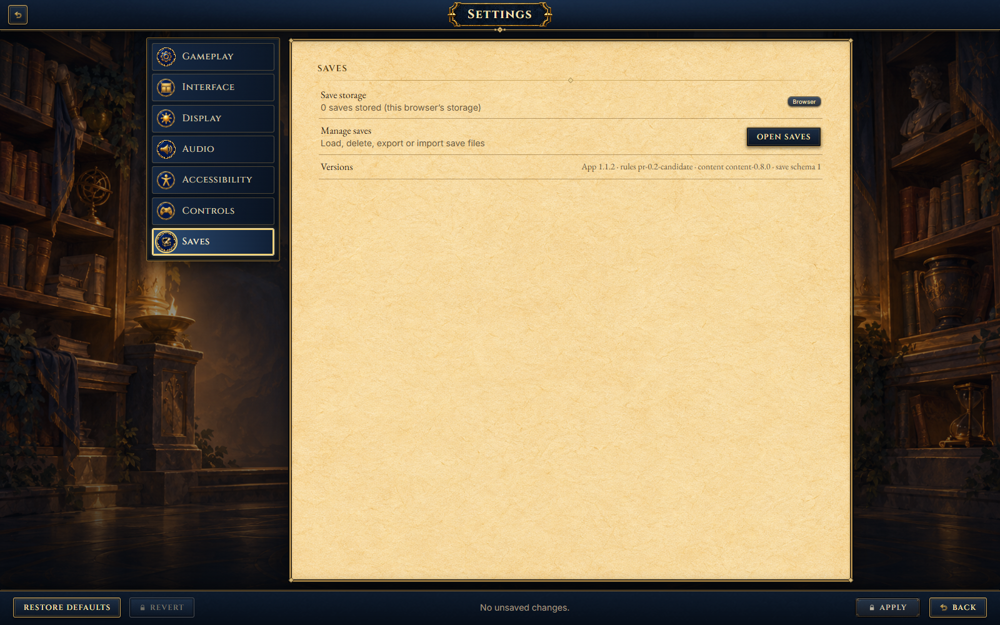
S18 · Creature detail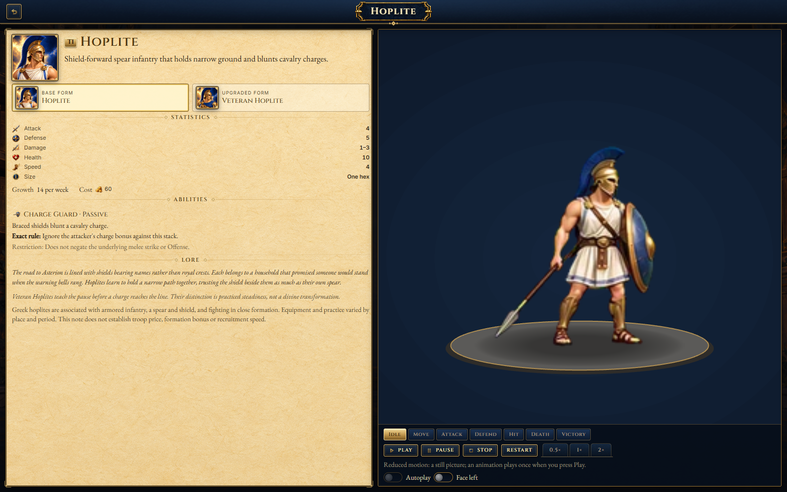
S19 · Random map setup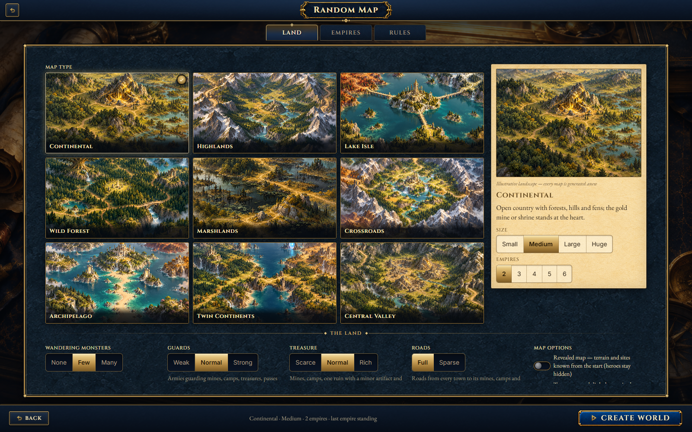
S20 · Match and campaign summary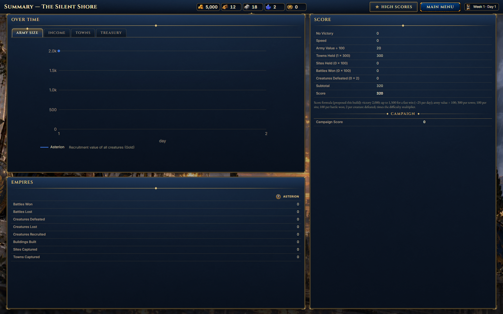
S21 · High scores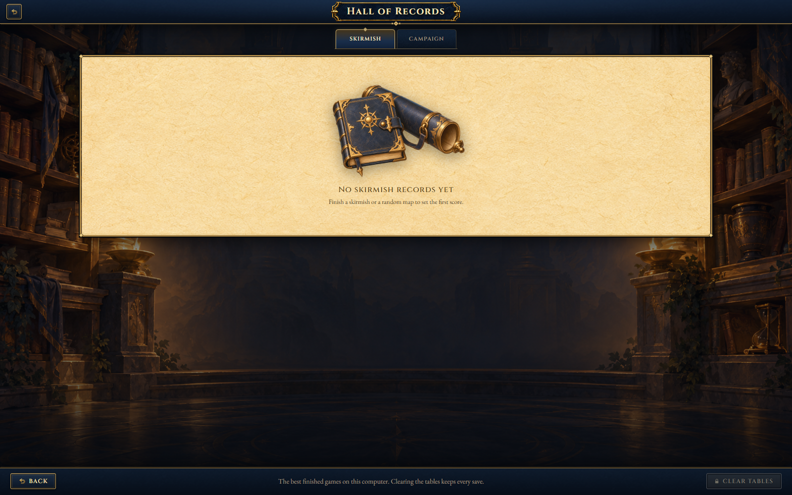
S22-check · Map editor validation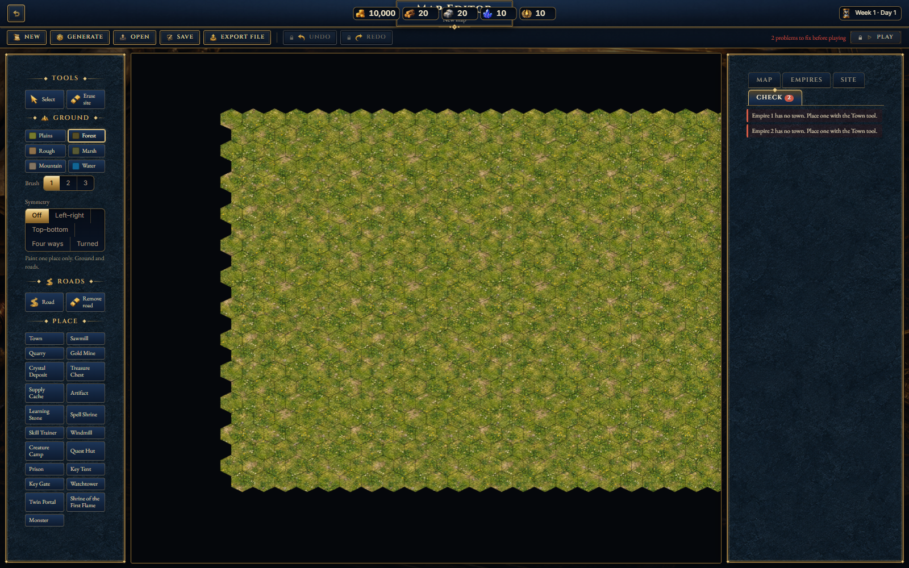
S22-empires · Map editor Empires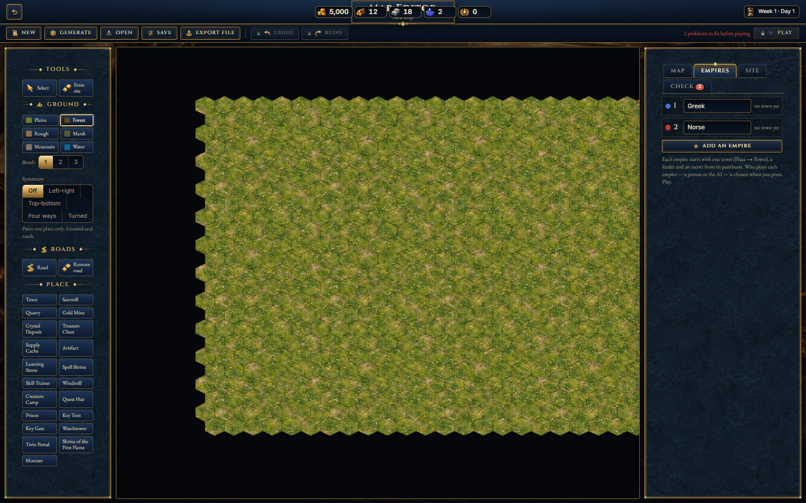
S22-map · Map editor Map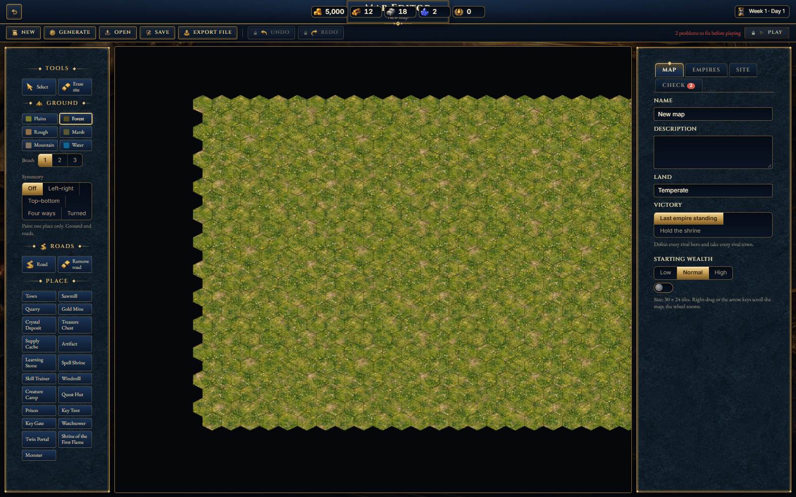
S22-site · Map editor site properties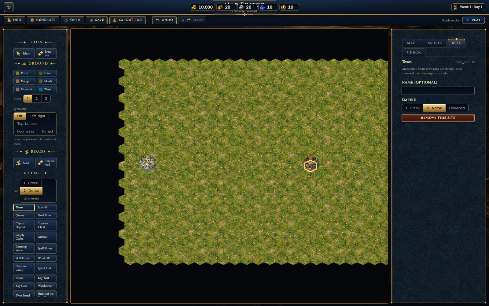
S23 · Authored map match setup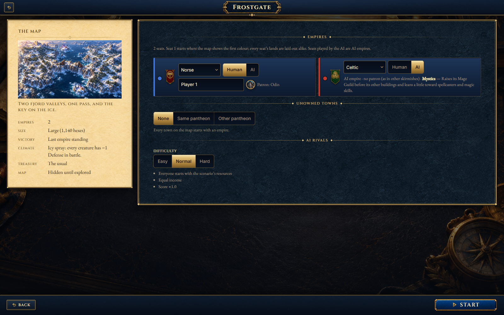
T01 · Building action panel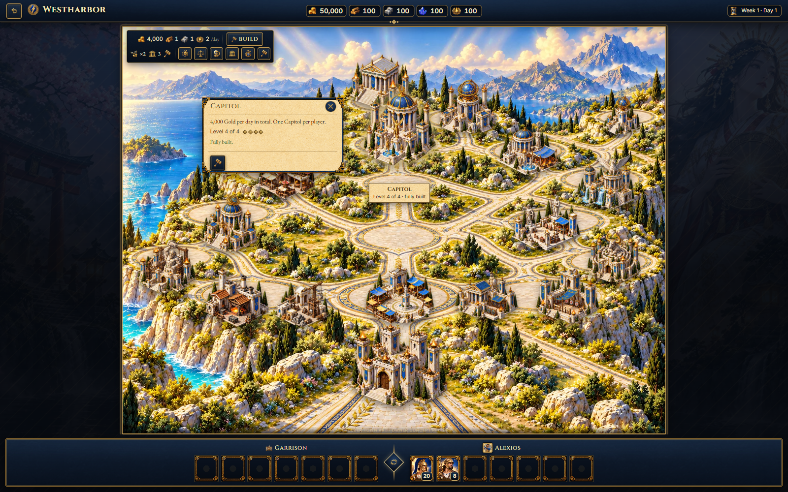
T02 · Marketplace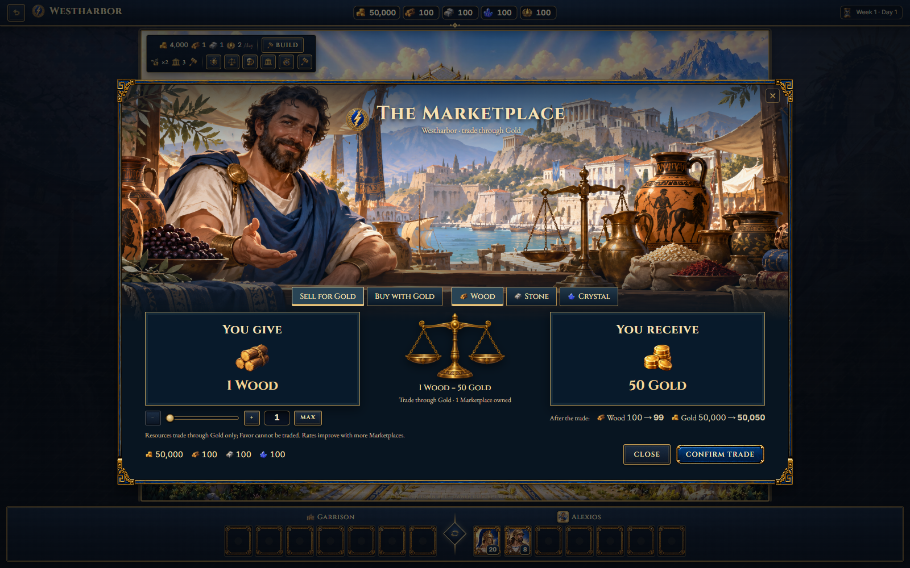